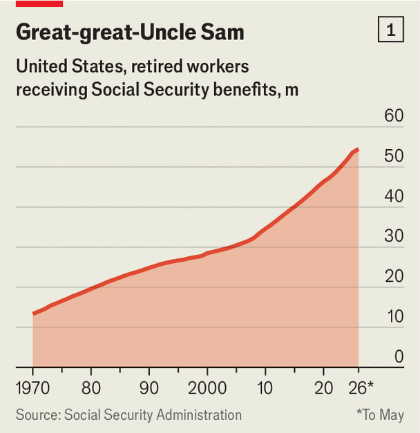
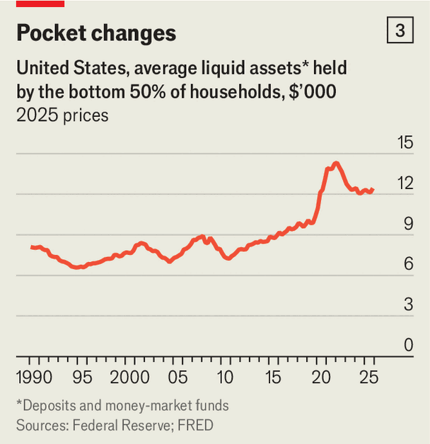

How stretched is the American consumer?
The household saving rate has plunged—but don’t panic
June 25th 2026

The latest fashionable worry about America’s economy is that consumers are spending beyond their means. Personal consumption—its engine, accounting for two-thirds of gdp—has grown by a respectable 2% or so over the past year. But the personal-saving rate fell to 2.6% in April. It has been lower only once since early 2008, when Bear Stearns, a bank, became an early casualty of the global financial crisis. It is only a matter of time, the argument goes, before consumption cracks.

From 1970 to 2000 the personal-saving rate, which measures how much income Americans have left after taxes and expenses, averaged around 10%. Even a year ago it was double April’s figure. Annual inflation is now outpacing wage growth for the first time in three years. Larger tax refunds from Donald Trump’s One Big Beautiful Bill Act—worth about $350 more per household than last year—have mostly been disbursed. On the surface, then, the low saving rate looks like proof that Americans are running short of cash.
There are, though, some benign explanations. The first is demographic. The saving rate at the end of the 20th century was supported by a much higher ratio of workers, who save for retirement, to pensioners, who draw down their savings. Today America has more pensioners than ever: the number collecting Social Security reached 54.5m in May (see chart 1). For the first time, more than half of those outside the labour force are 65 or older. Pensioners typically have less current income than workers, but keep spending by tapping lifetime savings. That pushes down the saving rate in a financially innocuous way.

Adjust for demography and the picture looks less alarming. Research by Federal Reserve economists suggests that a typical pensioner spends $15,000-22,000 more than their income each year. The gap is much larger for richer households with more assets. Across all oldies, such “dissaving” knocks just over five percentage points off the headline saving rate. Some of today’s low figure, then, reflects older Americans spending down what they saved in the past, and doing so more freely as high asset values boost their wealth, not younger households running out of money.
A look at household balance-sheets offers more reassurance. The saving rate measures the money left over from each month’s income, not the stock of cash that households already have on hand. And that stock of cash looks better than the monthly flow. Data from the Fed show that liquid assets—cash, bank deposits and money-market funds—are equivalent to about 84% of annual disposable income, up from less than 70% in the three decades before the pandemic (see chart 2). The cushion is not confined to the rich—and is thicker than the saving rate might suggest. The bottom half of households by wealth average liquid balances of around $12,800, more than at any point before the pandemic in real terms (see chart 3).

There is certainly no sign of an imminent consumption crunch in the latest private-sector data. pnc, a bank, finds that card spending (excluding petrol) rose by nearly 5% year on year in May, close to its fastest pace in four years. Spending on retail as well as travel, entertainment and other discretionary services looks especially perky, according to Bank of America. Walmart, the supermarket bellwether for middle America, reported that transactions in the first quarter this year rose at their fastest pace since 2024.
Together, tax refunds, high-rolling pensioners and fat cash mattresses have helped keep total consumption going. Yet consumers are not invulnerable. A big fall in the stock market could reduce willingness to spend even among the old. Oil prices are likely to stay high for months despite America’s tentative deal with Iran to reopen the Strait of Hormuz. Tariff disruption may intensify as the Trump administration’s investigations—the legal route the president is using to justify punitive duties—move forward. The future of the usmca, America’s trade pact with Canada and Mexico, is uncertain. American consumers can still withstand a lot. That does not mean they can withstand anything. ■
For more expert analysis of the biggest stories in economics, finance and markets, sign up to Money Talks, our weekly subscriber-only newsletter.